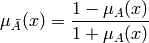

The basic type used in the fuzzy logic package is the FuzzySet. In a very basic manner, a FuzzySet is a scalar or an array of any shape, where the logic operations where adapted to work with the usual definitions of fuzzy logic.
Although you will probably never need to use this class, but there is a tutorial for it anyway for a simple reason: there are methods to allow the change of the norms used in fuzzy logic operations. But, in general, a FuzzySet will be returned by any function that should return a fuzzy set as a result (for example, a membership function).
To create a FuzzySet, just instance it with any numeric iterable, such as an array. Notice, however, that a fuzzy set shouldn’t have values smaller than 0 or bigger than 1. The instantiation will not check this – it is up to you to make sure your array doesn’t have forbidden values. Suppose the Peach module is already imported in the command line. You can create a FuzzySet by issuing the commands:
>>> a = FuzzySet([ 0, 0.25, 0.5, 0.75, 1. ])
>>> a
FuzzySet([ 0. , 0.25, 0.5 , 0.75, 1. ])
>>> b = FuzzySet([ 0, 0.5, 1., 0.5, 0. ])
>>> b
FuzzySet([ 0. , 0.5, 1. , 0.5, 0. ])
The fuzzy logic operations are mapped in the corresponding logic operators already used by Python. That is, the and operation is done by the & operator, the or operation is done by the | operator, and the not operation is done by the ~ operator:
>>> a & b
FuzzySet([ 0. , 0.25, 0.5 , 0.5 , 0. ])
>>> a | b
FuzzySet([ 0. , 0.5 , 1. , 0.75, 1. ])
>>> ~a
FuzzySet([ 1. , 0.75, 0.5 , 0.25, 0. ])
>>> ~b
FuzzySet([ 1. , 0.5, 0. , 0.5, 1. ])
As you can see, the default norms are the Zadeh norms, that is: max, min and one complement. You can change this by using the following methods. Notice that these are class methods, which means that they will change the way operations are done for all FuzzySets. They can be called from an instance (eg.: a.set_norm(...) or from the class itself (that is, FuzzySet.set_norm(...)):
- set_norm(f)
- Sets the and operation to that indicated by the f function. The f function must take two arguments and return the and value of the operation.
- set_conorm(f)
- Sets the or operation to that indicated by the f function. The f function must take two arguments and return the or value of the operation.
- set_negation(f)
- Sets the not operation to that indicated by the f function. The f function must take one argument and return the not value of the operation.
There are a number of available norms, conorms and negations to use. Some of them are described below:
- ZadehAnd, ZadehOr, ZadehNot
- The logic operations as defined by Lofti Zadeh, that is, respectively, the minimum, maximum and one complement.
- DrasticProduct, DrasticSum
- The drastic and and or operations.
- EinsteinProduct, EinsteinSum
- The and and or operations based on the relativity results.
- ProbabilisticAnd, ProbabilisticOr, ProbabilisticNot
- Logic operations based on the definitions of the respective operations in the probabilistic theory, that is: the product, the independent sum and the one complement.
See the example below on how to use them. We will set the norm and conorm for fuzzy set a as the probabilistic norms:
>>> a.set_norm(ProbabilisticAnd)
>>> a.set_conorm(ProbabilisticOr)
>>> a & b
FuzzySet([ 0. , 0.125, 0.5 , 0.375, 0. ])
>>> a | b
FuzzySet([ 0. , 0.625, 1. , 0.875, 1. ])
If you need, however, to use different norms and conorms at the same time, use the norms described above directly as functions, since that’s what they are:
>>> EinsteinProduct(a, b)
FuzzySet([ 0. , 0.09090909, 0.5 , 0.33333333, 0. ])
>>> EinsteinSum(a, b)
FuzzySet([ 0. , 0.66666667, 1. , 0.90909091, 1. ])
>>> DrasticProduct(a, b)
array([ 0. , 0. , 0.5, 0. , 0. ])
>>> DrasticSum(a, b)
array([ 0., 1., 1., 1., 1.])
When you use them in that way, the logic operators (&, | and ~) will suffer no change. You can, if you need, define your own norms. Suppose you want to use the Sugeno negation, defined as

All you have to do is create a function that takes the value and calculates the result, and set it as the negation of the set:
>>> def sugeno_negation(x):
... return (1-x)/(1+x)
...
>>> a.set_negation(sugeno_negation)
>>> ~a
FuzzySet([ 1. , 0.6 , 0.33333333, 0.14285714, 0. ])
You can do that with the norms and conorms too. Notice that there is no need to work with the commands in the function definition to make it work with arrays: by setting the function, the methods take care that it is modified to work with arrays. So, simple functions are okay.